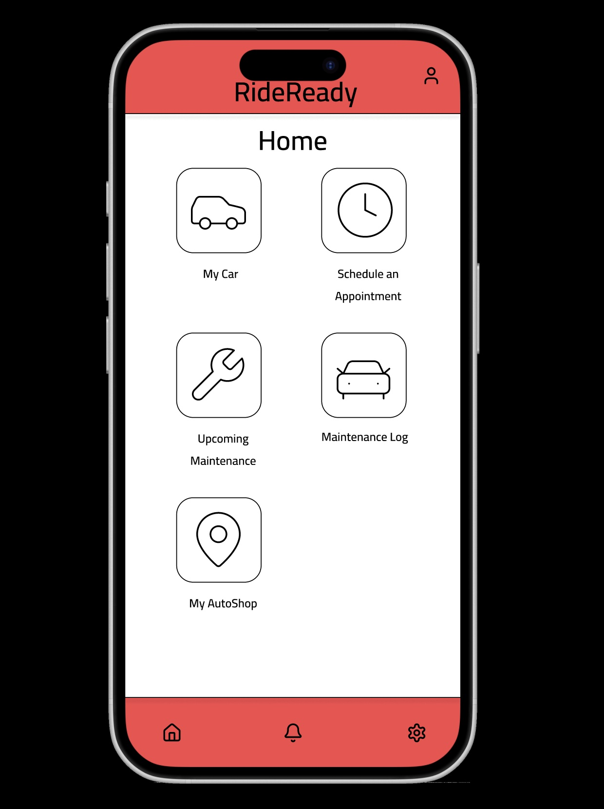
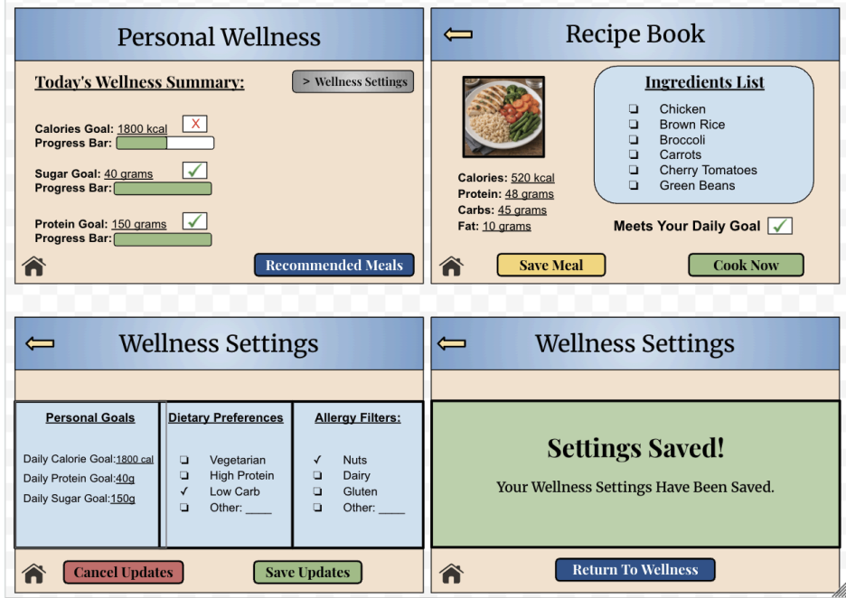

Projects
Project SustAIn: Full Immersion Cooling Systems (Ethical Tech Innovation)
Overview
Developed and presented a sustainable cooling solution for modern computing systems, addressing the environmental impact of energy-intensive data infrastructure.

Problem
High-performance computing systems, especially AI and data centers, generate significant heat and require energy-intensive cooling methods, raising concerns about sustainability and environmental impact.
Approach
- Researched energy consumption and environmental costs of existing cooling systems
- Analyzed alternative cooling methods and feasibility of immersion cooling
- Collaborated with a team to design a working prototype
- Developed and delivered a technical presentation in a Shark Tank–style format
Solution
Designed a full immersion cooling system using non-conductive mineral oil and built a functional prototype demonstrating how hardware can operate while fully submerged, reducing heat without traditional cooling infrastructure.
Impact
Demonstrated a scalable, energy-efficient alternative to traditional cooling methods and highlighted how ethical, sustainability-focused design can be integrated into high-performance computing solutions.
Personal Website - Web Development Project
Overview
Designed and developed a multi-page personal website to showcase projects while strengthening front-end development skills and user-centered layout design.

Problem
A lack of a centralized platform to present projects and technical work in a structured, accessible, and professional format.
Approach
- Structured content using semantic HTML and consistent page hierarchy
- Designed layouts with a focus on readability, spacing, and navigation
- Implemented multi-page navigation and internal linking
- Deployed and maintained the site using GitHub Pages
Solution
Built a multi-page website with clear structure, consistent styling, and intuitive navigation to showcase projects and supporting content in one place.
Impact
Created a scalable platform for showcasing work while improving skills in front-end development, content organization, and user-focused design.
Roller Skate E-Commerce UX Evaluation
Overview
Conducted a comparative UX evaluation of multiple e-commerce platforms to identify usability issues and improve the online shopping experience.

Problem
Users experience friction during online purchases due to unclear product information, inconsistent navigation, and poor sizing guidance.
Approach
- Performed heuristic evaluations across three e-commerce platforms
- Analyzed product pages, navigation structure, and checkout flow
- Identified usability issues and points of friction across the shopping experience
- Synthesized findings into actionable design recommendations
Solution
Developed a set of usability insights and proposed improvements focused on clearer product hierarchy, improved sizing guidance, and a more intuitive checkout experience.
Impact
Highlighted critical usability issues and provided recommendations that would improve user confidence, reduce friction, and streamline the purchasing process.
RideReady - Smart Transit Companion
Overview
Designed a mobile app prototype to simplify vehicle maintenance management through scheduling, tracking, and reminder-based functionality.

Problem
Users often struggle to manage vehicle maintenance due to scattered information, missed reminders, and complicated scheduling systems.
Approach
- Mapped user flows for scheduling and maintenance tracking
- Designed wireframes and high-fidelity screens in Figma
- Focused on simplifying navigation and reducing cognitive load
- Structured content to prioritize clarity and ease of use
Solution
Created an interactive mobile prototype that allows users to schedule appointments, track maintenance history, and receive reminders in a single, organized interface.
Impact
Improved usability by centralizing vehicle management tasks into a streamlined experience, reducing missed appointments and simplifying routine maintenance tracking.
Personal Website - Foundational Web Design Project
Overview
Developed an initial personal website to explore foundational web design principles and understand how layout and structure influence user experience.

Problem
Limited experience in translating design ideas into functional web interfaces using code.
Approach
- Built a website using basic HTML and CSS
- Focused on visual hierarchy, spacing, and content organization
- Experimented with color and layout to improve readability
- Structured content using semantic elements
Solution
Created a simple, functional website that presents content clearly and demonstrates foundational web development skills.
Impact
Established a strong foundation in web development and design thinking, shaping a more user-centered approach in future UX and front-end projects.
Smart Kitchen UX Prototype | Wellness Planning
Overview
Designed a wellness-focused feature within a Smart Kitchen application to help users manage nutrition goals and personalize their meal planning experience.

Problem
Users lack a clear, integrated way to manage dietary preferences, nutritional goals, and meal planning within a single system.
Approach
- Created storyboards to map user scenarios and interactions
- Designed low-fidelity and high-fidelity wireframes
- Developed user flows for goal tracking and preference management
- Applied interaction design patterns to improve usability and clarity
Solution
Designed an interface that allows users to set nutritional goals, manage dietary preferences, and receive personalized meal recommendations within a cohesive system.
Impact
Improved usability by connecting multiple features into a unified experience, making it easier for users to manage health goals and make informed food choices.